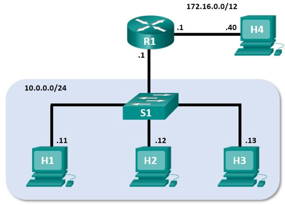

Mininet Topology
Objectives
Part 1: Install and Verify the Mininet Topology
Part 2: Capture and Analyze ICMP Data in Wireshark
Background / Scenario
The CyberOps VM includes a Python script that, when you run it, will set up and configure the devices shown in the figure above. You will then have access to four hosts, a switch, and a router inside your one VM. This will allow you to simulate a variety of network protocols and services without having to configure a physical network of devices. For example, in this lab you will use the ping command between two hosts in the Mininet Topology and capture those pings with Wireshark.
Wireshark is a software protocol analyzer, or "packet sniffer" application, used for network troubleshooting, analysis, software and protocol development, and education. As data streams travel over the network, the sniffer "captures" each protocol data unit (PDU) and can decode and analyze its content according to the appropriate RFC or other specifications.
Wireshark is a useful tool for anyone working with networks for data analysis and troubleshooting. You will use Wireshark to capture ICMP data packets.
Required Resources
- CyberOps Workstation virtual machine
Instructions
Part 1: Install and Verify the Mininet Topology
In this part, you will use a Python script to set up the Mininet Topology inside the CyberOps VM. You will then record the IP and MAC addresses for H1 and H2.
Step 1: Verify your PC's interface addresses.
Start and log into your CyberOps Workstation that you have installed in a previous lab using the following credentials:
Username: analyst Password: cyberops
Step 2: Run the Python script to install the Mininet Topology.
Open a terminal emulator to start Mininet and enter the following command at the prompt. When prompted, enter cyberops as the password.
[analyst@secOps ~]$ sudo ~/lab.support.files/scripts/cyberops_topo.py [sudo] password for analyst:
Step 3: Record IP and MAC addresses for H1 and H2.
a. At the mininet prompt, start terminal windows on hosts H1 and H2. This will open separate windows for these hosts. Each host will have a separate configuration for the network including unique IP and MAC addresses.
*** Starting CLI: mininet> xterm H1 mininet> xterm H2
b. At the prompt on Node: H1, enter ip address to verify the IPv4 address and record the MAC address. Do the same for Node: H2. The IPv4 address and MAC address are highlighted below for reference.
[root@secOps analyst]# ip address <output omitted> 2: H1-eth0@if3: <BROADCAST,MULTICAST,UP,LOWER_UP> mtu 1500 qdisc noqueue state UP group default qlen 1000 link/ether ba:d4:1d:7b:f3:61 brd ff:ff:ff:ff:ff:ff link-netnsid 0 inet 10.0.0.11/24 brd 10.0.0.255 scope global H1-eth0 valid_lft forever preferred_lft forever inet6 fe80::b8d4:1dff:fe7b:f361/64 scope link valid_lft forever preferred_lft forever
| Host-interface | IP Address | MAC Address |
| H1-eth0 | ||
| H2-eth0 |
Part 2: Capture and Analyze ICMP Data in Wireshark
In this part, you will ping between two hosts in the Mininet and capture ICMP requests and replies in Wireshark. You will also look inside the captured PDUs for specific information. This analysis should help to clarify how packet headers are used to transport data to the destination.
Step 1: Examine the captured data on the same LAN.
In this step, you will examine the data that was generated by the ping requests of your team member's PC. Wireshark data is displayed in three sections:
- The top section displays the list of PDU frames captured with a summary of the IP packet information listed.
- The middle section lists PDU information for the frame selected in the top part of the screen and separates a captured PDU frame by its protocol layers.
- The bottom section displays the raw data of each layer. The raw data is displayed in both hexadecimal and decimal form.
a. On Node: H1, enter wireshark & to start Wireshark (The pop-up warning is not important for this lab.). Click OK to continue.
[root@secOps]# wireshark & [1] 1552 [root@secOps ~]# ** (wireshark:1552): WARNING **: Couldn't connect to accessibility bus: Failed to connect to socket /tmp/dbus-f0dFz9baYA: Connection refused Gtk-Message: GtkDialog mapped without a transient parent. This is discouraged.
b. In the Wireshark window, under the Capture heading, select the H1-eth0 interface. Click Start to capture the data traffic.
c. On Node: H1, press the Enter key, if necessary, to get a prompt. Then type ping -c 5 10.0.0.12 to ping H2 five times. The command option -c specifies the count or number of pings. The 5 specifies that five pings should be sent. The pings will all be successful.
[root@secOps analyst]# ping -c 5 10.0.0.12
d. Navigate to the Wireshark window, click Stop to stop the packet capture.
e. A filter can be applied to display only the interested traffic. Type icmp in the Filter field and click Apply.
f. If necessary, click the first ICMP request PDU frames in the top section of Wireshark. Notice that the Source column has H1's IP address, and the Destination column has H2's IP address.
g. With this PDU frame still selected in the top section, navigate to the middle section. Click the arrow to the left of the Ethernet II row to view the Destination and Source MAC addresses.
Does the Source MAC address match H1's interface?
Does the Destination MAC address in Wireshark match H2's MAC address?
Note: In the preceding example of a captured ICMP request, ICMP data is encapsulated inside an IPv4 packet PDU (IPv4 header) which is then encapsulated in an Ethernet II frame PDU (Ethernet II header) for transmission on the LAN.
Step 2: Examine the captured data on the remote LAN.
You will ping remote hosts (hosts not on the LAN) and examine the generated data from those pings. You will then determine what is different about this data from the data examined in Part 1.
a. At the mininet prompt, start terminal windows on hosts H4 and R1.
mininet> xterm H4 mininet> xterm R1
b. At the prompt on Node: H4, enter ip address to verify the IPv4 address and record the MAC address. Do the same for the Node: R1.
[root@secOps analyst]# ip address
| Host-interface | IP Address | MAC Address |
| H4-eth0 | ||
| R1-eth1 | ||
| R1-eth2 |
c. Start a new Wireshark capture on H1 by selecting Capture > Start. You can also click the Start button or type Ctrl-E Click Continue without Saving to start a new capture.
d. H4 is a simulated remote server. Ping H4 from H1. The ping should be successful.
[root@secOps analyst]# ping -c 5 172.16.0.40
e. Review the captured data in Wireshark. Examine the IP and MAC addresses that you pinged. Notice that the MAC address is for the R1-eth1 interface. List the destination IP and MAC addresses.
IP address:
MAC address:
f. In the main CyberOps VM window, enter quit to stop Mininet.
mininet> quit *** Stopping 0 controllers *** Stopping 4 terms *** Stopping 5 links ..... *** Stopping 1 switches s1 *** Stopping 5 hosts H1 H2 H3 H4 R1 *** Done
g. To clean up all the processes that were used by Mininet, enter the sudo mn -c command at the prompt.
analyst@secOps ~]$ sudo mn -c [sudo] password for analyst: *** Removing excess controllers/ofprotocols/ofdatapaths/pings/noxes killall controller ofprotocol ofdatapath ping nox_core lt-nox_core ovs-openflowd ovscontroller udpbwtest mnexec ivs 2> /dev/null killall -9 controller ofprotocol ofdatapath ping nox_core lt-nox_core ovs-openflowd ovs-controller udpbwtest mnexec ivs 2> /dev/null pkill -9 -f "sudo mnexec" *** Removing junk from /tmp rm -f /tmp/vconn* /tmp/vlogs* /tmp/*.out /tmp/*.log *** Removing old X11 tunnels *** Removing excess kernel datapaths ps ax | egrep -o 'dp[0-9]+' | sed 's/dp/nl:/' *** Removing OVS datapaths ovs-vsctl --timeout=1 list-br *** Removing all links of the pattern foo-ethX ip link show | egrep -o '([-.[:alnum:]]+-eth[[:digit:]]+)' ip link show *** Killing stale mininet node processes pkill -9 -f mininet: *** Shutting down stale tunnels pkill -9 -f Tunnel=Ethernet pkill -9 -f .ssh/mn rm -f ~/.ssh/mn/* *** Cleanup complete.